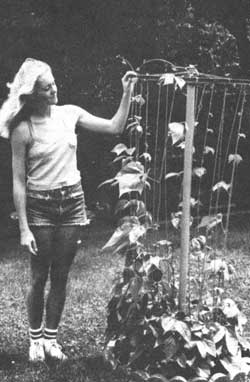
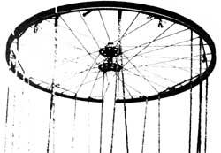
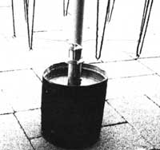

I've seen-and coveted-a goodly number of different commercial bean towers over the course of my gardening years. However, I've never been quite willing to buy one of the things. After all, I've always figured it to be a pretty safe bet that (sooner or later) I'd come across a piece of somebody else's "junk" that'd do the job just as well and allow me to save a sizable sum of money in the bargain!
Sure enough, last winter an obliging neighbor discarded a slightly bent wheel from his tenspeed bicycle. One look at that throwaway put my imagination into high gear ... and soon a length of pipe, a few wire clothes hangers, a pair of used radiator hose clamps, and a little twine joined the wheel, to become a dandy beanpole.
The "trunk" of my tower is, of course, the pipe . . . specifically, a section of 1-7/8 "diameter conduit left over from a chain link fence-building session. I was pleased to discover that my wheel's gearsprocket threads matched those on the inside of the pipe, allowing me to screw the hub right into the top of the piece of conduit. (Naturally, you aren't likely to hit upon a perfect match, but I'm sure you'll be able to come up with any number of other ways to join your components.)
The top ends of the to-be-added bean strings would be tied to the wheel ... so, in order to secure the bottoms of the strands, I fashioned eight brackets-from a total of four coat hangers to be clamped to the pole a bit above its base. After straightening out each hanger and cutting it in half, I simply formed a small loop (to tie the twine to) in one end of each section, using needle-nosed pliers, and made a right-angled bend at a point eight inches from the loop. The hose clamps were then spaced several inches apart on the pole to securely grip one "leg" of each string guide.
If you're lucky enough to scrounge a long piece of pipe, you'll probably be able to simply pound your tower into the garden soil. I only had a six-foot length of conduit, though (barely adequate for my high-climbing pole beans), so I elected to anchor the shaft in a can of concrete and then bury the can... gaining stability without having to sacrifice much of my pole's height.
I topped off the project with a coat of rustproof spray paint, then threaded the support strings and planted my beans in a compact circle around the tower's base. Before long, those energetic legumes were reaching for the sky... and I knew that the discarded bicycle part had turned into a real "wheel of fortune" for my garden!
|
 |
 |
 |